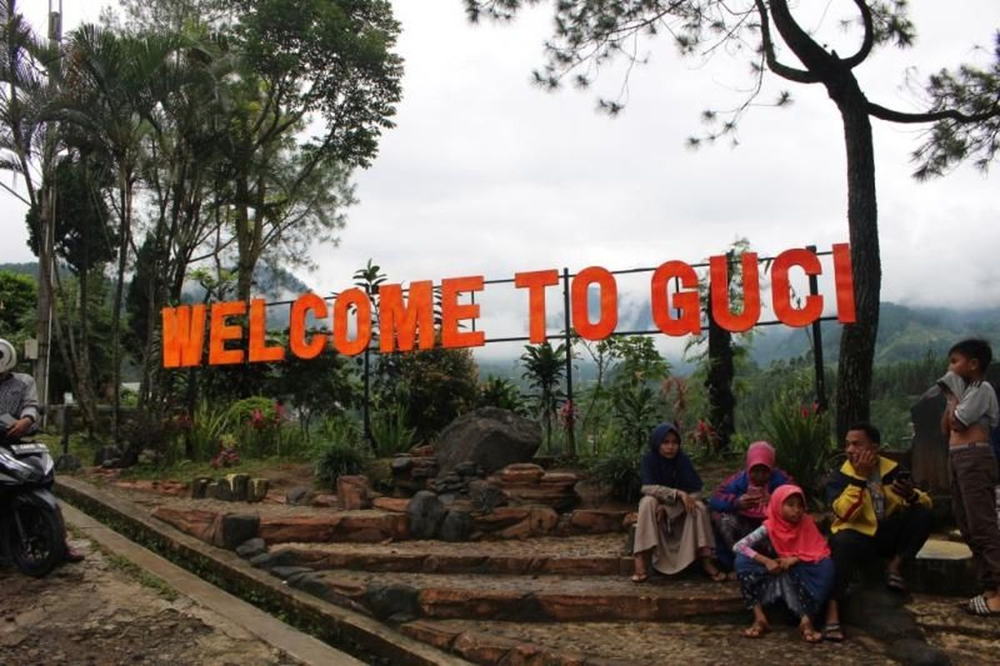
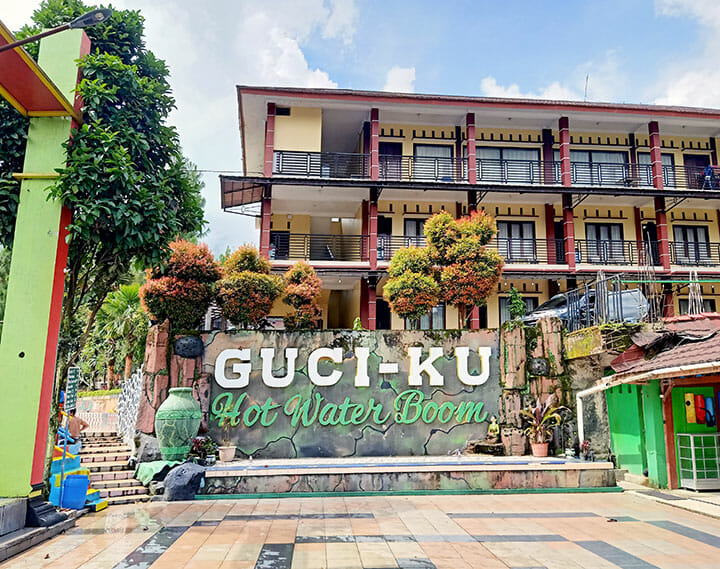
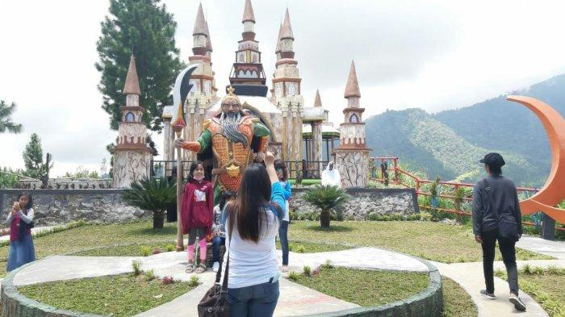

Content
1. Pemandian Air Panas
Wisata Guci memang identik dengan pemandian air panas yang ada di Guci. Belum mandi air panas di sini, ya belum ke Guci. Begitulah kira-kira kalimat buat traveler yang ke Guci. Pemandian air panas memang menjadi salah satu destinasi favorit wisatawan saat ke Guci. Air panas inimengandung belerang makanya diyakini bisa menyembuhkan penyakit kulit.
Berbagai cara bisa dipilih wisatawan untuk merasakan air panas di Guci. Mulai dari dengan tempat terbuka di sungai, pancuran, shower di kamar mandi tertutup, bath up di pemandian, water park, sampai di vila-vila privat yang tersebar di kawasan Guci. Tempat paling favorit untuk wisatawan mandi-mandi ada di 10 air terjun, tujuh pancuran, tiga belas pancuran dan lima pancuran. Nama-nama itu disesuaikan dengan jumlah pancuran. Misalnya, pancuran tiga belas artinya di area itu terdapat 13 buah pancuran, pancuran lima memiliki jumlah pancuran sebanyak 5, begitu pula pancuran tujuh memiliki jumlah pancuran sebanyak 7 buah
2. Water Boom Guciku
Selain pemandian air panas yang menampilkan panorama alam, di sini kamu pun dapat menikmati pemandian air panas dengan menampilkan wahana permainan air. Hot Water Boom Guci-Ku merupakan pemandian air panas berupa kolam renang dan wahana air yang bersih dan jernih. Permainan di dalamnya beragam, ada seluncuran hingga tong air. Cocok untuk jadi wisata keluarga
3. Curug Pengantin
Datang ke Guci, kamu juga dapat menemui curug yang indah di sana, yakni Curug Penganten. Curug Penganten memiliki terjun kembar dengan air jernih dan pemandangan alam yang menyegarkan. Loaksi curug ini tidak jauh dari taman Wisata Guci, cuma sekitar 8 menit naik kendaraan bermotor.
4. Bukit Bintang
Wisata Bukit Bintang ini menawarkan view pedesaan di Tegal. Traveler bisa glamping di sini atau hanya selfie hingga 70 spot. Juga, berbagai wahana, di antaranya perosotan raksasa, giant swing, dan jembatan kaca 3D. Di sini dilengkapi sejumlah spot untuk berfoto. Lengkap dengan restoran ala Korea buat pengunjung.
Berkunjung ke sini traveler dapat melihat panorama pegunungan yang indah dan asri di pagi hari. Lalu untuk malam hari traveler dapat menyaksikan indahnya lampu perkotaan yang menyala seakan kunang-kunang.